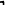

> 不規則な人称変化をする動詞の多くは、日常生活でよく使われる基本的な動詞です。スペイン語の歴史の中で使い込まれる中で、言いやすい形に変形してきたのだと言えます。 不規則な人称変化をする動詞のうち、以下のものをここでは覚えよう。 ir は再掲です。 hacer, ir, jugar, salir, venir, ver 不規則な人称変化と言っても、そこにはパターンがあります。 • 複数１人称、複数２人称が不規則になることはありません。 • １人称単数が、 -goで終わるパターンがあります。 hago, tengo, salgo, vengo • また、 -ar, -er, -ir という語尾の直前の音節の母音が e => ie、o => ue, u=> ue e => i のようになるパターンも多く見られます。 juego, tiene, viene だいたいの不規則動詞はこれらのパターンを持っています。それ以外のパターンについては、それぞれに覚えていくことにしましょう。 よく使う不規則動詞 verbos irregulares de uso común
